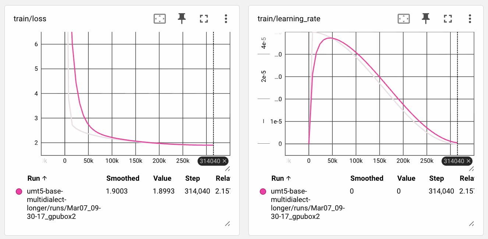
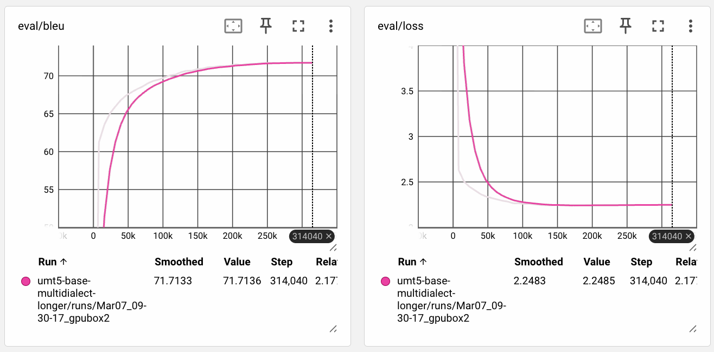
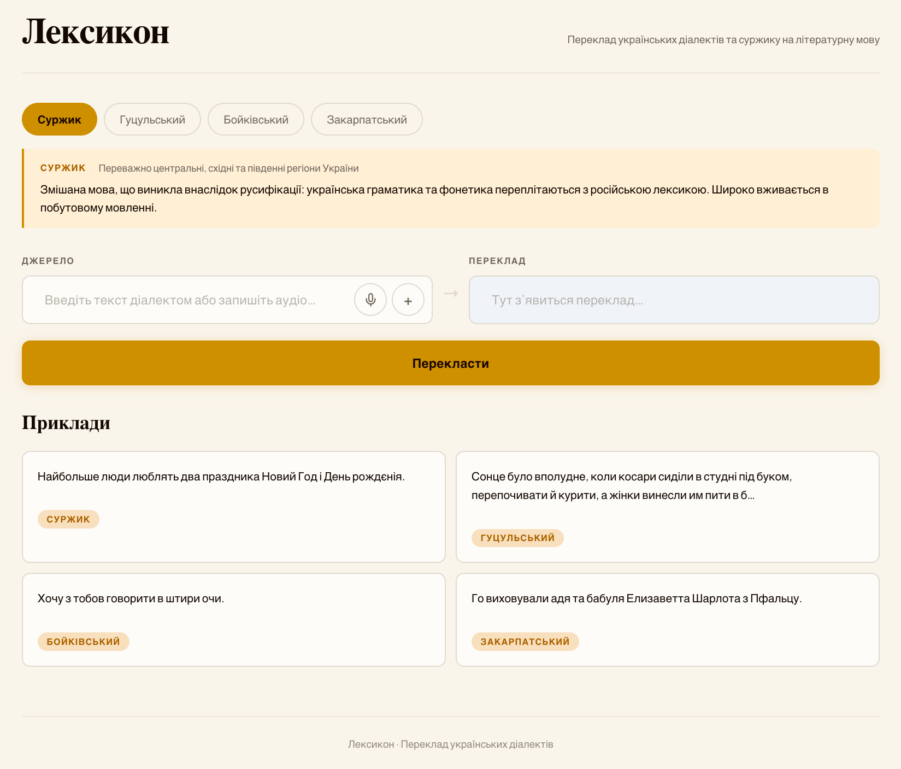

«Lexicon»: a system that translates four non-standard varieties of Ukrainian into the literary norm.
Open data is scarce: one small parallel corpus exists for Hutsul, none for Boiko or Transcarpathian. LanguageTool and similar tools treat these varieties as spelling errors; Vuyko Mistral covers Hutsul only.
Develop a system that automatically normalizes surzhyk and three regional dialects (Hutsul, Boiko, Transcarpathian) to the literary standard of modern Ukrainian, using neural models and low-resource data techniques.
The process of automatic normalization of non-standard forms of modern Ukrainian - surzhyk and regional dialects.
Methods of building parallel datasets for low-resource language varieties, and methods of training translation models and LLMs for normalization.
First single system covering surzhyk + three dialects; first public synthetic parallel datasets for Boiko and Transcarpathian; comparative evaluation of a translation model vs. an LLM on multi-dialect normalization.
The «Lexicon» web application: normalizes four varieties of Ukrainian to the literary standard and supports voice input.
| Capability | Vuyko Mistral | Spivavtor / UA-GEC | LanguageTool | Commercial LLMs | «Lexicon» (ours) |
|---|---|---|---|---|---|
| Surzhyk normalization | − | ± as errors | ± as errors | ± weak zero-shot | ✓ |
| Regional dialects | ± Hutsul only | − | − | ± weak zero-shot | ✓ three dialects |
| Open parallel dataset | ✓ Hutsul | ± GEC edits | − | − | ✓ 125,615 pairs |
| Single model, many varieties | − | − | − | ± generalist | ✓ |
| Voice input | − | − | − | ± poor on dialects | ✓ ASR module |
Closest related work: Vuyko Mistral (2025), LLM adaptation for Hutsul translation; Spivavtor (2024), instruction-tuned Ukrainian text editing.
9,853 manual Hutsul pairs · normative sentences from Spivavtor · scanned dialect & surzhyk dictionaries (PDF)
A single system that normalizes text from any of the four varieties to the literary standard
Synthetic data expansion (rules + LLM) · fine-tuning translation models · prompt engineering
«Lexicon» web app: pick a variety, type or speak, get normalized literary Ukrainian
Train/validation split 90/10. The test set is fully manual: 200 pairs, 50 per variety, with no overlap with training data.
| Variety | Manual | LLM-generated | Rule-based | Train | Validation | Test (manual) |
|---|---|---|---|---|---|---|
| Hutsul | 9,853 | 19,841 | - | 26,725 | 2,969 | 50 |
| Boiko | - | 29,754 | - | 26,778 | 2,976 | 50 |
| Transcarpathian | - | 29,605 | - | 26,644 | 2,961 | 50 |
| Surzhyk | - | 29,612 | 20,911 | 45,471 | 5,052 | 50 |
| Total | 9,853 | 108,812 | 20,911 | 125,615 | 13,756 | 200 |
Only Hutsul comes with manual training data.
We also tried mBART, ByT5 and Lapa LLM; umt5-base and MamayLM scored best in the initial Hutsul-only baseline runs.


314k steps over the multidialect corpus; training loss settles near 1.9, validation BLEU near 71.7.
| Model | Surzhyk | Hutsul | Boiko | Transcarpathian |
|---|---|---|---|---|
| umt5-base (ours) | 93.58 | 86.90 | 54.78 | 27.45 |
| MamayLM (ours) | 91.22 | 74.02 | 66.82 | 20.93 |
| GPT-4o (zero-shot) | 88.97 | 64.89 | - | 65.39 |
| Gemini 2.0 Flash (zero-shot) | 86.67 | 65.34 | 74.57 | 68.16 |
| Mistral Large (zero-shot) | 85.79 | 63.18 | 70.91 | 63.65 |
| MamayLM before fine-tuning | 65.58 | 16.73 | 58.73 | 27.90 |
Both of our models passed the threshold: umt5-base - 93.58, MamayLM - 91.22.
+6.91 chrF++ on surzhyk and +21.56 on Hutsul over the strongest zero-shot baseline. Fine-tuning lifted MamayLM itself by +25.64 (surzhyk) and +57.29 (Hutsul). *Holds for varieties with quality training data.
Average: 68.69. Boiko (66.82) and Transcarpathian (27.45) train on synthetic data only; the commercial models stay ahead there.

NiceGUI + FastAPI; the interface is ≈250 lines of Python.
Fine-tuned umt5-base, beam search with 5 beams, float16 on GPU.
ASR module speechbrain/m-ctc-t-large; WebM, OGG and WAV are converted to 16 kHz mono.
Four variety presets with descriptions and one example sentence per variety.
Thank you for your attention.